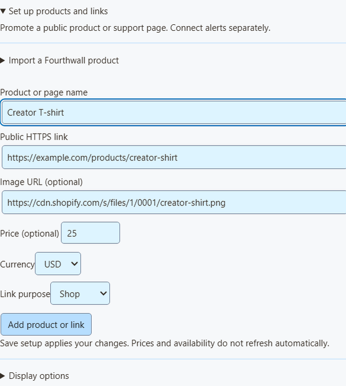
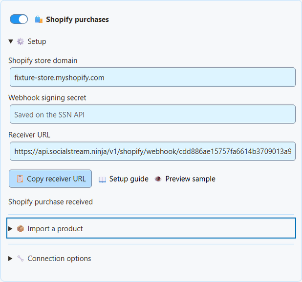
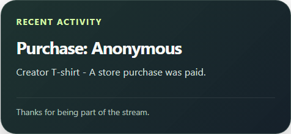

Show a Shopify product in 5 steps
- In Social Stream Ninja, open Monetization → Shopify purchases → Setup.
- Type your store address, like
your-store.myshopify.com. No secret needed. - Avatud Import a product, paste the product's public link, and click Load product details.
- Check the name, picture, price, and link. Then click Add product or link.
- Lülitage sisse Products & support links and click Save setup.

What the import fills in
- It loads one product at a time.
- The token is used for that one request, then cleared.
- The link is Shopify's public store link, including your custom domain if Shopify gives one.
- The price is only filled in when every variant costs the same. Otherwise it stays blank. Only add a price if it's accurate.
- It's a snapshot. Prices and stock don't update by themselves, so check it when your store changes.
- Unavailable products, and products without a public Online Store link, can't be imported.
- You can always type a product in by hand instead.
Shopify Storefront authentication · Product query · Creating a public token using Headless
Get an alert when someone buys
- In Shopify, go to Settings → Notifications → Webhooks. Find the webhook signing secret. (This is not a Storefront token.)
- In Social Stream Ninja, open Monetization → Shopify purchases → Setup.
- Enter your
myshopify.comaddress and the signing secret. - Lülitage sisse Shopify purchases and click Save setup.
- Klõpsake Copy receiver URL.
- In Shopify, create a webhook. Event: Order payment. Format: JSON. URL: the receiver URL.
- Pick a stable API version and save. (SSN was built against 2026-07.)
- Keep Social Stream Ninja running.

| ma tahan… | Tehke seda |
|---|---|
| Pause alerts | Turn off Shopify purchases. |
| Stop for good, or switch stores | Klõpsake Disconnect Shopify (deletes the receiver and waiting events). Delete the webhook in Shopify too. |
Where your secret goes
- The signing secret is stored encrypted on the SSN receiver. The box clears after you save.
- A separate private reader key stays on this computer.
- Neither one is ever put in OBS links or viewer QR codes.
- The receiver checks Shopify's signature and your store name before it accepts an order.
- Shopify has its own receiver, so you don't need the older remote API control switch.
Shopify: manually creating webhooks · Shopify: verifying deliveries
Put it in OBS
- Under OBS overlay for, choose Products & support links.
- Avatud Overlay link options and pick an Overlay view: Product showcase only (pictures, prices, QR codes), Support card only (a small shop link), or Activity alerts only (purchases).
- Klõpsake Copy OBS link. Add it to OBS as a Brauseri allikas, starting at 800 × 600. Use one source per view.
- Scan the QR code with your phone at your final stream size.

| ma tahan… | Tehke seda |
|---|---|
| Share a product link in chat | Klõpsake Copy public link next to the product. |
| Show only Shopify alerts in the Monetization overlay | Määra Alert source filter juurde shopify. Products & support links must be on. |
| Show purchases in multi-alerts or the activity feed | Nothing extra. They get Shopify purchases even without the product list. |
Event Flow and donation goals
- In Event Flow, choose Event Type
purchaseand filter the source/type toshopify. - For order-value rules, compare
meta.commerce.orderTotal. Checkmeta.commerce.currencyesiteks. - Purchases are not donations. They have no
hasDonationvõidonoValue, and donation goals don't go up. - A product card labelled Gift doesn't change how orders are counted. Shipping to someone else doesn't make it a gift to you.
Test safely
Klõpsake Preview sample to see the look. It's not connected to your session, so it never runs Event Flow, changes totals, or checks a payment. For a full test, use a Shopify development store. Orders marked test: true show in the status only, with no alerts.
What has been tested without a real store
Tests in the real app cover signed messages (including non-English text), tampered signatures, repeat deliveries, test orders, currency rounding, oversized requests, removal of private customer data, and catching up after being offline. No real orders or merchant account were used.
Shopify CLI sample webhooks can test message handling, but not subscriptions or retries, and they still need app credentials. See Shopify CLI webhook testing limits.
Probleemide lahendamine
| Probleem | Proovi seda |
|---|---|
| Save setup shows an error | The receiver isn't on at the server yet. Don't use the old session webhook URL instead. |
| Status stays on waiting | Check the webhook: Order payment, JSON, exact receiver URL, myshopify.com address, and secret. Custom app webhooks use the app's own secret. |
| Event skipped | Only fully paid orders above zero, marked test: false, and updated in the last 7 days count. Unpaid, part-paid, and cancelled orders are skipped. |
| SSN was off during a sale | Orders wait up to 7 days. Start SSN and they come through. |
| An action ran twice | Repeats are blocked for 7 days, but a crash mid-action can repeat it. Add your own check for important automations. |
| No buyer name | On purpose. Names, emails, addresses, notes, custom fields, checkout links, and order IDs are never shown. |
| A refund didn't remove the alert | Refunds, cancellations, and edits don't undo alerts. This isn't bookkeeping. |
How waiting and repeat orders work
- Order times may be up to five minutes in the future (clock drift).
- Payment is never guessed from order creation, shipping, or stock changes. A missing test flag is skipped.
- Status and waiting orders survive a receiver restart.
- Storage is limited. If the receiver can't safely store an order, it asks Shopify to send it again later.
- Repeats are matched by store and order, even if Shopify's delivery IDs differ.
- SSN saves which orders it handled before confirming them.
Vt Shopify event details and the product and QR code guide.